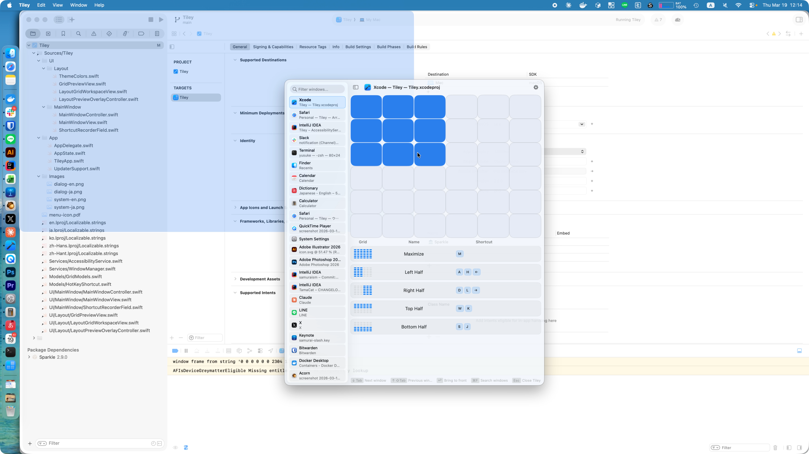

Tiley
A free, simple macOS utility to arrange your windows.
Drag a grid, place a window.
A free, simple macOS utility to arrange your windows.
Drag a grid, place a window.

Select a region on the grid to tile your window.
A customizable grid appears over your screen. Drag to select the region where you want to place a window.
Trigger the grid or apply layout presets instantly with customizable keyboard shortcuts.
Save frequently used layouts — Left Half, Right Half, Maximize, and more — and apply them in one step.
Built natively for Apple Silicon with Swift and AppKit. Fast, efficient, and right at home on your Mac.
Adjust rows, columns, and gap size to match your workflow and display setup.
Built-in update checking via Sparkle keeps you on the latest version automatically.
Press the global shortcut or click the menu bar icon to show the layout grid.
Drag across the grid cells to define the region where you want your window placed.
The frontmost window is moved and resized to fit your selection instantly.
Open the grid overlay with one keystroke.
Tiley requires macOS 14 (Sonoma) or later.
macOS requires Accessibility access to move and resize windows belonging to other applications. Tiley uses the Accessibility API solely for window management — no data is collected.
Yes. Open Settings from the menu bar to adjust the number of rows, columns, and the gap between cells.
Yes. Each layout preset (Maximize, Left Half, etc.) can have its own global shortcut assigned in Settings.
Yes, Tiley is free and open source. The source code is available on GitHub.
Tiley's grid-based window placement was inspired by Divvy, a window manager we used and loved for years. When we needed a version built natively for Apple Silicon and modern macOS, we decided to reimagine that experience from the ground up as a free, open-source app.
Free, open source, and native to macOS.
Download Latest Release